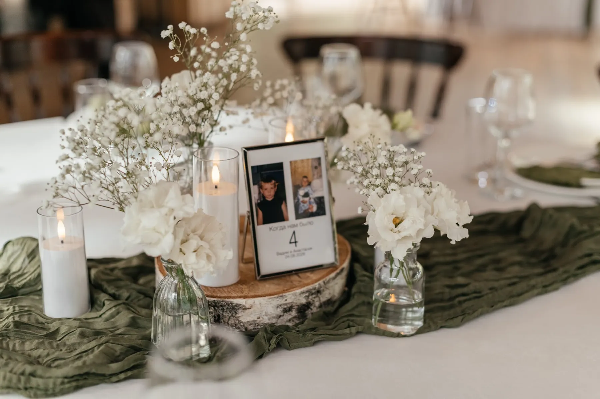

Свадебный декоратор отвечает за то, как будет выглядеть ваша свадьба: от идеи и палитры до последней свечи на столе и демонтажа после вечера. Хороший декоратор не просто «ставит цветы», а собирает пространство в одну историю и держит смету под контролем. Рассказываем, что входит в работу свадебного декоратора, как считается стоимость и на что смотреть при выборе.
Свадебный декор · смета за 24 часа
Хотите посчитать декор вашей свадьбы?
Расскажите о дате, площадке и числе гостей, пришлите референсы — предложим идею и посчитаем смету по позициям за 24 часа.
Свадебный декор FFP →Что делает свадебный декоратор
- Концепция и палитра — мудборд, по которому видно, как будет выглядеть каждая зона.
- Смета по позициям — церемония, президиум, гостевые столы, велком-зона, навигация, свет, монтаж и демонтаж.
- Флористика и материалы — закупка цветов, ткани, свечей, подготовка конструкций.
- Работа с площадкой — правила, время монтажа, крепления, открытый огонь.
- Монтаж в день свадьбы, перестановка между церемонией и банкетом, демонтаж.
Как считается стоимость
Чаще всего работа декоратора не выделяется отдельной строкой «услуги», а входит в смету: материалы и флористика, подготовка, логистика, монтаж и демонтаж. Поэтому сравнивать нужно не «цену декоратора», а состав сметы под вашу площадку и число гостей. В сметах наших свадеб 2026 года на 40–60 гостей минимальная сумма декора — 150 000 ₽. Подробнее — в статье про стоимость оформления свадьбы.
Как выбрать декоратора
- Реальные свадьбы в портфолио, а не картинки из интернета: спросите, где и когда это было.
- Смета по позициям — видно, за что вы платите и где можно сэкономить.
- Кто будет на монтаже и кто отвечает за площадку в день свадьбы.
- План Б на погоду для выездной церемонии.
- Совпадение по вкусу — посмотрите несколько свадеб подряд, а не одну лучшую.
Общие советы — в статье про выбор декоратора мероприятий.
Как мы работаем
- Бриф: дата, площадка, число гостей, палитра, референсы.
- Идея и мудборд.
- Смета по позициям за 24 часа после брифа.
- Правки, договор, согласование с площадкой.
- Монтаж, перестановка и демонтаж в день свадьбы.
Наши свадьбы
В разделе «Кейсы» — 10 свадеб лета 2026 года с фото по зонам: белый сад под стеклом у Константина и Дарьи, белые цветы в тёмном зале у Дмитрия и Дианы, зелень и свечи в лесном павильоне у Вадима и Анастасии, красный бархат в усадьбе у Артёма и Екатерины и другие.

Как заказать
Расскажите о дате, площадке и числе гостей, пришлите референсы — предложим идею и посчитаем смету по позициям за 24 часа. Летние субботы разбирают заранее, поэтому декоратора лучше выбрать вместе с площадкой — зимой или весной. Работаем в Москве и Подмосковье. Подробнее — в разделе «Свадебный декор».
Частые вопросы
Что входит в услуги свадебного декоратора?
Концепция и мудборд, смета по позициям, флористика и материалы, работа с площадкой, монтаж, перестановка и демонтаж.
Сколько стоят услуги декоратора на свадьбу?
Обычно работа входит в смету вместе с материалами и логистикой. В сметах наших свадеб 2026 года на 40–60 гостей минимальная сумма декора — 150 000 ₽; точную смету присылаем за 24 часа.
Как выбрать свадебного декоратора?
Смотрите реальные свадьбы в портфолио, просите смету по позициям, уточняйте, кто будет на монтаже и какой план Б на погоду.
Когда бронировать декоратора?
Вместе с площадкой — на летние даты лучше зимой или весной.